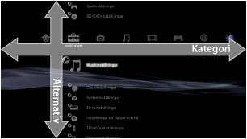
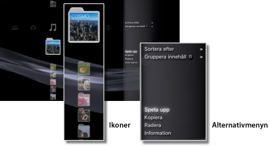
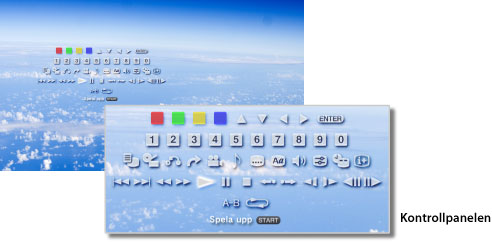

Om XMB™-menyn > Om menyn XMB™ (XrossMediaBar)
Om menyn XMB™ (XrossMediaBar)
Använda XMB™-menyn
PS3™-systemet har ett användargränssnitt som kallas XMB™ (XrossMediaBar). På den vågräta raden syns systemfunktioner i kategorier, och i den lodräta kolumnen visas vilka funktioner som kan utföras i varje kategori.

| Riktningsknappar | Välj en kategori eller ett alternativ. |
|---|---|
 -knappen -knappen |
Bekräfta det valda alternativet. |
| -knappen | Avbryt en funktion. |
 -knappen -knappen |
Visa alternativmenyn/kontrollpanelen. |
| PS-knappen | Visa XMB™-menyn. |
Spela upp innehåll
Från XMB™-menyn, välj innehållet på skivan eller på ett lagringsmedium, och tryck därefter på -knappen. Tryck på -knappen för att avbryta uppspelningen.
Tips!
En lämplig USB-adapter (medföljer ej) krävs för att kunna använda lagringsmedia med vissa modeller i PS3™-systemet.
Informationspanel
Med informationspanelen i skärmens övre högra hörn kan du t.ex. se information om hur många vänner som är online, notis om nya meddelanden och den senaste informationen som finns under [What's New].

(1) |
Avatar * |
|---|---|
(2) |
Antal vänner som är online * |
(3) |
Information om ny textchatt * |
(4) |
Information om nya meddelanden |
(5) |
Datum och tid |
(6) |
Upptagen-symbol |
(7) |
Information finns under [What's New]* |
* Visas bara när du har loggat in på PlayStation®Network.
Använda alternativmenyn
Välj en ikon från XMB™-menyn, och tryck sedan på -knappen för att visa alternativmenyn. Du kan visa eller dölja alternativmenyn genom att trycka på -knappen.

Alternativen på alternativmenyn
De tillgängliga alternativen varierar efter kategori.
| Spela upp / Starta / Visa | Spela upp innehåll. |
|---|---|
| Mata ut skivan | Mata ut skivan. |
| Radera | Radera innehåll. |
| Kopiera | Kopiera innehåll till hårddisken eller till lagringsmedia.*1 |
| Information | Visa information om innehållet. Vissa uppgifter, t.ex. namnet, kan ändras. |
| Lägg till i spellistan | Lägg till innehåll i en spellista. |
| Visa alla | Visa alla mappar som sparats på lagringsmedia eller ett USB-minne.*1 |
| Sortera efter | Sortera innehåll efter namn, datum etc. |
| Gruppera innehåll | Ändra grupperingsmetod till grupp per album, format eller andra alternativ.*2 |
| Radera flera | Välj flera innehållsalternativ och Radera alla samtidigt. |
| Kopiera flera | Välj flera innehållsalternativ och kopiera alla samtidigt. |
| *1 |
En lämplig USB-adapter (medföljer ej) krävs för att använda lagringsmedia med vissa modeller av PS3™-systemet. |
|---|---|
| *2 |
Innehåll som inte har den information som krävs för gruppering, läggs in i mappen [Okänd]. En del innehåll blir inte grupperat. |
Använda kontrollpanelen
Under uppspelning av innehållet, tryck på -knappen för att öppna kontrollpanelen. Du kan visa eller dölja kontrollpanelen genom att trycka på -knappen. Alternativen på kontrollpanelen varierar beroende på vilket innehåll som spelas upp.

Använda flera funktioner samtidigt
Det går bra att använda flera funktioner samtidigt. Till exempel kan du visa bilder under  (Foto) eller ansluta till Internet under
(Foto) eller ansluta till Internet under  (Nätverk) medan du spelar upp musik under
(Nätverk) medan du spelar upp musik under  (Musik).
(Musik).
Exempel: Visa bilder under (Foto) medan du spelar upp musik under (Musik)
1. |
Spela upp musik under |
|---|---|
2. |
Tryck på PS-knappen. |
3. |
Välj vilka bilder du vill visa under |
Tips!
- Du kan inte spela upp (Musik)-innehåll med andra funktioner vid uppspelning av Super Audio CD eller när
 (Inställningar) >
(Inställningar) >  (Musikinställningar) > [Utdatafrekvens] har ställts in till [44.1/ 88.2 / 176.4 kHz].
(Musikinställningar) > [Utdatafrekvens] har ställts in till [44.1/ 88.2 / 176.4 kHz]. - Vissa funktioner som brukar kunna användas samtidigt kanske inte kan det beroende på vilken typ av innehåll som spelas upp.
Obs!
Super Audio CD kan inte spelas upp på vissa PS3™-system. För mer information, se [Olika typer av uppspelningsbara skivor].